In the last tutorial we setup the High-Speed Multiplier for use, now we will actually use it to
multiply some numbers. Up until now we have used the Constant Transmitter to provide our values
that we have been using in past tutorials. In this tutorial I am going to also introduce how to
use the Card Reader to provide values for your setups.
Be sure to start this tutorial using the saved setup from the last tutorial. This tutorial assumes
that the High-Speed Multiplier is already properly connected.
|
First be sure you have the Init tab slected on the simulator |
| 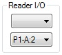 | Set the output of the Reader to P1-A:2 |
We will be using the Start button to start this setup rather than the Go button that
we have been using in the past. When using the Start button the first action of ENIAC is to
read a card and then once the read is complete to send a pulse on the Reader ouptut.
We are going to allow this setup to process multiple cards, so will instruct ENIAC to read the next
card immediately upon completion of the first read.
| 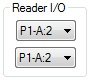 | Set the input of the Reader to P1-A:2 |
At this point you might be wondering why we immediatly begin reading the next card before processing
the first card. The reason we can do this is because ENIAC takes quite a bit of time to actually
read a card. While ENIAC is reading the next card we can do the remainder of the work and therefore
wait a little bit less time during the next loop. In order to prevent the reader from sending its
output pulse too early there is an interlock input to prevent the Reader from outputting a pulse
until the interlock has received a pulse. If the Reader finishes before it receives the interlock
pulse, then it just waits until it receives the pulse before sending the next output pulse.
| 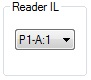 | Set the Reader Interlock to P1-A:1 |
Now lets go and put some cards in the reader
| Select the Reader tab | |
 |
Turn On the power to the card reader |
Enter the following two cards into the Card Input Hopper:
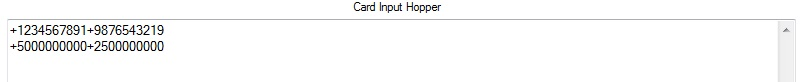
In past tutorials we have punched cards, but I have not really gone over the format itself on punched
cards. A punched card contains 80 columns, divided into 8 fields of 10 digits, or more precisely
16 fields of 5 digits each. When a card is read, each group of 10 digits is placed into one of the
Constant Tramistter registers, Registers A through H. The + and - signs that appear on cards on the
original ENIAC were over-punches that occured on one of the digits in the field, it did not matter
which character the overpunches occured on, so for example, all of these are valid ways to punch
-123:
+00123-00123
If no sign appears in the second half of a 10 digit group, then the sign of the second half will be
the same as the first half. For example:
-0012300456
Would be -123 and -456.
Here is the format indicating how each digit is placed into the Constant Transmitter registers:
+AAAAA+AAAAA+BBBBB+BBBBB+CCCCC+CCCCC+DDDDD+DDDDD+EEEEE+EEEEE+FFFFF+FFFFF+GGGGG+GGGGG+HHHHH+HHHHH
Now, lets get back to creating our setup. When we left off, after a card was read the Card Reader
sent a P1-A:2 pulse. We now need to act on that pulse.
 |
Select the Const1 tab |
|
Turn On the power to the Constant Transmitter |
| 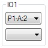 | Set the input for program 1 to P1-A:2 |
| 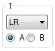 | Configure program 1 by setting its mode to LR and to send register A |
 |
Set the digit output of the Constant Transmitter to D1-A |
Now we need to configure accumulator 1 to receive the first number
 |
Select the Acc tab |
 |
Select accumulator 1 |
|
Turn On the power to this accumulator |
 |
Set the input for program 1 to P1-A:2 |
 |
Configure program 1 by setting its mode to alpha and its Clear/Correct switch to 0 |
 |
Set the alpha digit input port to D1-A |
Now we need to retrieve the second value into accumulator 2
|
Select the Const1 tab |
| 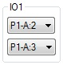 | Set the output for program 1 to P1-A:3 |
| 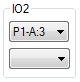 | Set the input for program 2 to P1-A:3 |
| 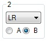 | Configure program 2 by setting its mode to LR and to send register B |
|
Select the Acc tab |
 |
Select accumulator 2 |
|
Turn On the power to this accumulator |
| 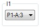 | Set the input for program 1 to P1-A:3 |
|
Configure program 1 by setting its mode to alpha and its Clear/Correct switch to 0 |
|
Set the alpha digit input port to D1-A |
Now that we have the numbers to multiply, we can trigger the multiply action
|
Select the Const1 tab |
| 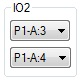 | Set the output for program 2 to P1-A:4 |
 |
Select the Multiplier tab |
| 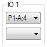 | Set the input for program 1 to P1-A:4 |
Next we have to configure all the parameters of the multiplier program
| 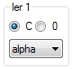 | Configure the Ier1 selector to alpha and the Ier Clear switch to C |
The purpose of the Ier control switches is to control how the multiplier accumulator (9) receives its
argument. When the mode switch is set at any of the values from alpha to epsilon, a pulse will be
sent on the R alpha through R epsilon outputs corresponding to the mode setting. In the case above,
mode alpha is selected, so a pulse will be sent out the R alpha program output, which is connected
to a program on accumulator 9 setup to receive on the alpha channel. The Ier Clear switch specifies
what will happen to the accumulator once multiplication is complete. If the switch is set to C then
the accumulator will be cleared to zeroes upon completion, otherwise it will be left intact.
| 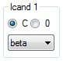 | Configure the Icand1 selector to beta and the Ier Clear switch to C |
The Icand control switches work just like the Ier control switches, except they control the multiplicand
accumulator (10). Also, the pulse receive pulse will be sent on the D alpha through D epsilon program
output.
| 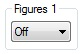 | Set the Figures 1 control switch to Off |
The figures control switch controls round-off in the answer. Since we are producing a full 20 digit
product, we do not want round off to occur. Normally if this switch is set from 2 through 10 it will
place a 5 in the digit position one greater than the setting of the switch.
| 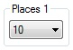 | Set the Places 1 switch to 10 |
The Places switch specifies how many digits (counting from the left) of the multiplier (accumulator 9)
are used for the multiplication. All 10 digits of the multiplicand (accumulator 10) are always used.
For example: If the multiplier accumulator held +1257500000 and the Places switch was set to 3 then
then all 10 digits of the multiplicand will be multipled by just .125.
 |
Set the Product 1 switch to AC |
This final program setting switch controlls the final product accumulators (13 and 14) and specifies
what they are to do when multiplication is complete. The setting of this switch specifies which of the
A through ASC program outputs on panel 3 will be pulsed when multiplication is done. Normally these
are connected to the product accumulator (13) and activate send programs to send the final product
to another destionation.
This completes the setup of the multiplication program. Now we need to set accumulators 1 and 2, which
hold the values we read from the card, to send their values to the multiplier and multiplicand
accumulators at the same time as when the Multiplier Unit is triggered
|
Select the Acc tab |
|
Select accumulator 1 |
|
Turn On the power to this accumulator |
| 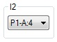 | Set the input for program 2 to P1-A:4 |
 |
Configure program 2 by setting its mode to A and its Clear/Correct switch to 0 |
|
Set the alpha digit input port to D1-A |